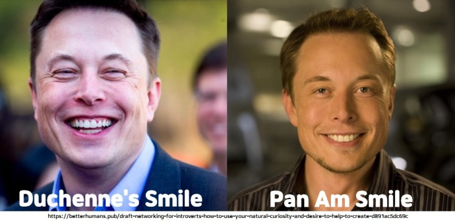
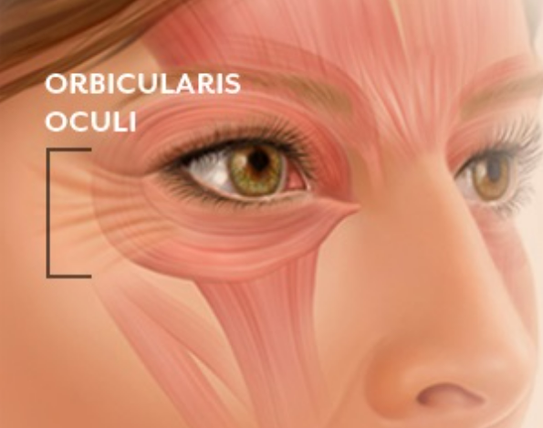

프로젝트 2
뒤센 미소 vs 팬암 미소
폴 에크만의 연구에 따르면 사람은 자신의 얼굴 근육 42개를 다양하게 조합해 총 19 종류의 미소를 만들어 낼 수 있다고 합니다.
놀라운 것은 이 19개의 미소 중 딱 한 가지만 진짜 기쁨과 행복으로부터 우러난 것이라는 점이죠.


진짜 웃음은 눈 가장자리 근육인 '안륜근'을 사용하는 데, 안륜근은 의도적으로 움직이기 어려운 근육입니다.
폴 에크만은 이를 처음 밝혀낸 기욤 뒤센을 기리기 위해 진짜 미소를 뒤센미소(Duchenne's Smile)라고 명명했습니다.

뒤센 미소와 상반된 가짜 미소를 의미하는 용어로 팬암미소(Pan Am Smile)가 있는 데,
이는 과거 미국의 팬 아메리칸 에어라인이라는 항공사 승무원들의 미소를 빗댄 표현입니다.
티처블 머신을 통한 진짜 미소 구별하기
먼저 체험하기 과정을 통해 감정을 맞추는 AI를 경험한 후,만들기 과정을 통해 머신러닝에 대해 학습합니다.
마지막으로 코드를 보지 않고 수행해 보아요.